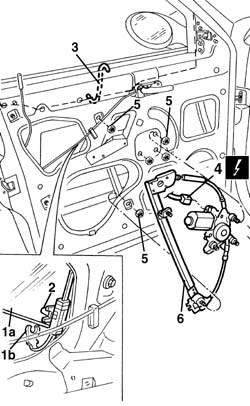

7005M20 front side door electric window system - r r with door panel/support frame removed
- Path
- Procedures > 70 FITTINGS > 7005 PASSENGER COMPARTMENT FRONT SIDE DOORS > 7005M front electric windows > 7005M20 front side door electric window system - r r with door panel/support frame removed
- Kind
- repair procedure (removal / refitting; the operation number is the code)
- Applies to
- all engines; all production periods
- Interactive page
- https://sloeber94.github.io/elrnDB-a156/en/#/3238614
Applies to: all engines; all production periods
 Removing
Removing
 Refitting
Refitting7005A04 front side door water guard protection - r r or replace with door panel removed
1. Open the window (1a) about 1/3 of the way, then disconnect the window safety retainer (1b).
2. Open the window about 2/3 of the way, then disconnect it from the drive pin.
3. Manually raise the window to the closed position; fit a support hook as shown in the figure to prevent accidental lowering of the window.
4. Disconnect the electrical connection of the electric window motor.
 | Name | Connector |
|---|---|---|
4 | Front left electric window motor |
| Name | Connector |
|---|---|---|
4 | Front right electric window motor |
5. Undo the electric window fixing bolts.
6. Remove the electric window unit from the door frame.

Applies to: all engines; all production periods
Refitting
RemovingCheck the condition of the electrically-operated window and ensure the motor is working properly.
Refit the electric window in the door frame, fixing it using the bolts.
Connect the electrical connection for the electric window motor.
Remove the window support hook.
Open the window about 2/3 of the way, then connect it to the drive pin.
Open the window about 1/3 of the way, then connect it to the window safety retainer.
Check that the electric window works properly.
7005A04 front side door water guard protection - r r or replace with door panel removed
Topics linked from this page (3)
- 7005A04 front side door water guard protection - r r or replace with door panel removed
- N60 Front left electric window motor
- N61 Front right electric window motor